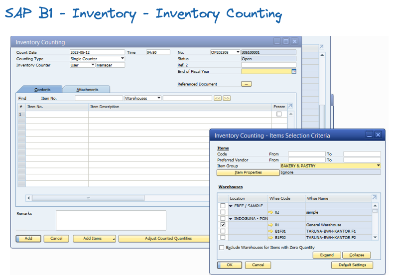

Prosedur Setelah Inventory¶
Warehosue¶
- Melakukan rekap dan perhitungan Opname
IT¶
SAP WEB¶
- Bypass rules dengan mengupdate status barang menjadi
MTO( Make To Order ) - Aktifkan cetakan
DOdi module sales order
INVENTORY COUNTING¶
SKEMA 1¶
SKEMA 1 Mengggunakan SAP B1 inventory Counting modul.
- Generate semua Item untuk melakukan inventory ccounting, berdasarkan group barang
[generate template stock opname]

-
Set Freeze semua item di module inventory counting, agar tidak ada transaksi stock yang masuk
-
Input semua data opname di inventory counting
- Setelah selesai pihak accounting cek nilai, dan setelah disetujui management terkait, lakukan
copy to inventory posting
---
title : Skema stock opname 1
---
flowchart LR
id1[Inventory Counting] --> id2{Cek Accounting}
id2 -. revisi .-> id1
id2--Copy To--> id3[Inventory Posting]